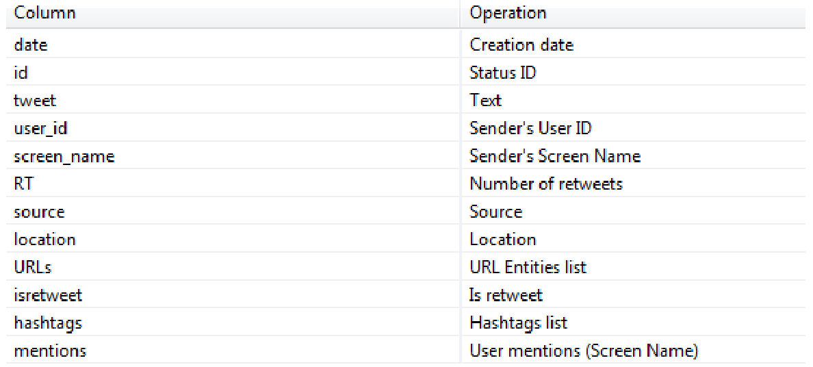

Présenté par l'équipe Web2Control
Service d'échange de messages courts (tweets)
Possibilité de follow d'autres utilisateurs
Possibilité de retweeter un tweet à ses followers
Possibilité de répondre à un tweet
Gestion des hashtags
API REST : Accès à des données via recherche
API Streaming : Accès à un flux de données continu
REST : 450 req./15 mn
Streaming : 1% des messages publiés
Public Streams : Données publiques
User Streams : Données de l'utilisateur
Site Streams : Version multi-utilisateur de User Streams
Site Streams encore en BETA
Données retournées au format JSON
Authentification nécessaire via OAuth
Plein de bibliothèques disponibles
Exemple avec la RubyGem TweetStream
require 'tweetstream'
TweetStream.configure do |config|
config.consumer_key = 'MY_KEY'
config.consumer_secret = 'MY_SECRET'
config.oauth_token = 'MY_TOKEN'
config.oauth_token_secret = 'MY_SECRET_TOKEN'
config.auth_method = :oauth
end
#Recherche via mots-clé
TweetStream::Client.new.track('term1', 'term2') do |status|
puts "#{status.text}"
end
Sélection simplifiées des informations d'un tweet
Nom, identifiant, date de création, nombre de followers, relation avec l'utilisateur courant, état de la géolocalisation, adhésion à certaines communautés, localisation, apparence du profil, dernier tweet, ...
Contenu, coordonnées, date d'envoi, identifiant, état de la discussion, langue, lien avec un lieu précis, présence de contenu sensible, lien avec l'utilisateur courant, informations de l'auteur, plainte DMCA, filtrage dans certains pays, ...
Hashtags, médias, URL et mentions d'autres utilisateurs
Nom, coordonnées, pays, type, url, adresse, ville, numéro de téléphone, ...
Cette liste n'est pas exhaustives...
... contrairement à la documentation